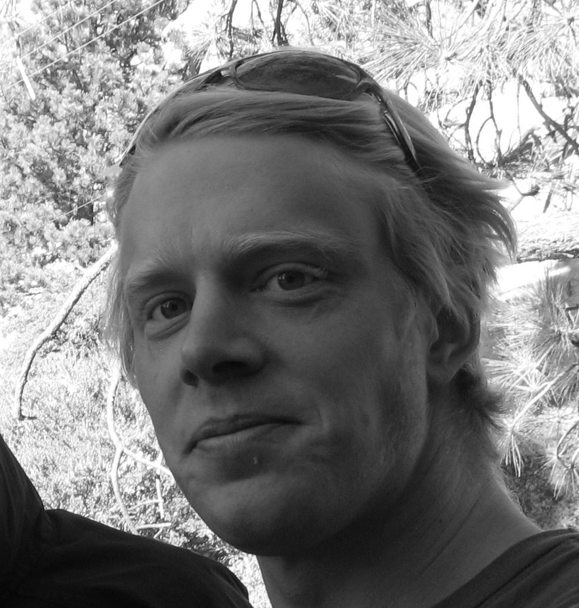

I'm a fourth year Ph.D. student at the Computer Vision group at the UCSD computer science department. My researach focus is on the automated annotation and analysis of scientific data. Specifically, we focus on the automated annotation of coral reef survey images, within the scope of a National Science Foundation project: Computer Vision Coral Ecology. My advisors are professors David Kriegman and Serge Belongie.
Before joining UCSD I was lead developer at Hövding, a Swedish startup company. As their first employee and engineer I created the algorithmic framework and hardware design for Hövding's renowned invisible bicycle helmet.
I received my joint B.S / M.S degree in Engineering Physics from Lund University in 2007. My masters thesis work at Cellavision on Single Image Focus Level Assessment Using Support Vector Machines received several awards and generated an international patent.
The Moorea Labeled Corals dataset is a subset of the Moorea Coral Reef-Long Term Ecological Research (MCR-LTER) dataset packaged for Computer Vision research. It contains 2055 coral reef survey images from the island of Moorea in French Polynesia. Each image has 200 expert random point annotations, indicating the substrate underneath each point. [www]
Always focused on making sure my work is useful in practice, I started developing the CoralNet website in 2011 together with some talented undergraduate students at UCSD. CoralNet is a repository and a resource for benthic images analysis. The site implements sophisticated computer vision algorithms that allow researchers, agencies, and private partners to rapidly annotate benthic survey images. The site also serves as a repository and collaboration platform for the scientific community. [www]

Address:
4148 CSE Building (EBU3B)
University of California, San Diego
9500 Gilman Drive, Mail Code 0404
La Jolla, CA 92093-0404
Web:
http://vision.ucsd.edu/~beijbom/website/
Email:
obeijbom at cs dot ucsd dot edu